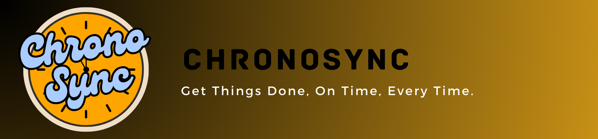

Spendometer
Spendometer - See It. Track It. Control It.
This app is meant to be a worthy successor to the first app I built - Coin Compass. This, too, is inspired by a design I came across on YouTube (Thanks YouTube recommendations!).
The backend used is Isar - which provides way more functionalities than Hive - one of the reasons I opted for a new and improved app than updates to the old one. It will have features like Budget Tracking, Saving Receipts etc. I am having a blast building this - it's soo much fun working on stuff you actually enjoy. I hope I'll be able to push this out in April 2024 - if everything goes smoothly. I'll share the info on my LinkedIn when it's published, so keep an eye out for that.